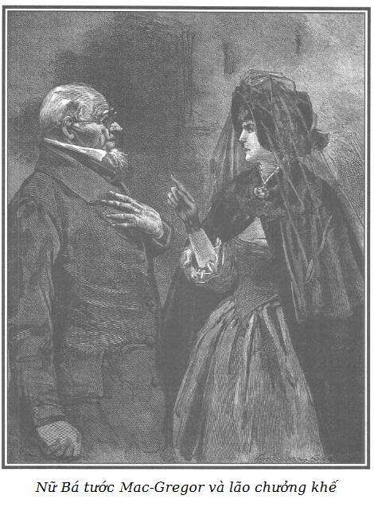

Sarah bước vào văn phòng lão chưởng khế bình tĩnh và tự tin như mọi khi. Jacques Ferrand vốn không quen bà ta, không biết bà ta đến với mục đích gì, lão giữ ý tứ như thường lệ nhưng chú ý hơn mọi ngày với hy vọng là bịp thêm được một người nữa. Lão quan sát người phụ nữ rất kĩ và mặc dù bà ta thản nhiên, mặt lạnh như tiền, lão vẫn để ý thấy đôi mày bà ta rung nhè nhẹ, dường như không muốn để lộ ra một niềm bối rối cố dồn nén.
Lão chưởng khế đứng lên, đẩy tới một cái ghế, ra hiệu mời Sarah và nói:
- Thưa bà, bà đã mong muốn có một buổi gặp gỡ với tôi ngày hôm nay. Hôm qua tôi rất bận, mãi sáng nay tôi mới có thể trả lời thư bà, muôn vàn tạ lỗi.
- Tôi mong được gặp ông, thưa ông, cho một công việc vô cùng quan trọng. Tiếng tăm về lòng trung thực, đức từ tâm, sự sốt sắng giúp đỡ người khác của ông làm tôi hy vọng ở kết quả mĩ mãn của công việc mà tôi lo toan, mong muốn nhờ ông giúp đỡ.
Lão chưởng khế vẫn ngồi nguyên chỗ, khẽ nghiêng mình.
- Tôi biết ông xưa nay kín đáo rất mực.
- Đó là nghĩa vụ của tôi, thưa bà.
- Ông là một người cứng rắn, không thể mua chuộc.
- Thưa bà, đúng thế.
- Tuy nhiên, nếu có một ai đó nói với ông: “Thưa ngài, việc trả về với cuộc sống, hơn thế nữa kia, trả lại lý trí cho một người mẹ đau khổ tùy thuộc vào ông” thì liệu ông có nỡ tâm từ chối không?
- Bà cho biết chính xác sự việc hơn, tôi sẽ trả lời.
- Cách đây khoảng mười bốn năm gì đó, vào cuối tháng Mười hai năm 1824, một người đàn ông, đang còn trẻ, mặc đồ tang đến gặp ông đề nghị với ông ký gửi một số tiền một trăm năm mươi nghìn franc đầu tư không hoàn trả* cho một đứa trẻ ba tuổi mà cha mẹ nó muốn giữ kín tên tuổi.
Nguyên văn: à fond perdu - đầu tư mất không cho niên kim trọn đời, người chết thì của hết, không hoàn trả.
- Thế sau rồi sao, thưa bà? - Lão chưởng khế hỏi lại như vậy để khỏi phải trả lời rằng “Có”.
- Ông đã bằng lòng nhận khoản đầu tư ấy và nhận đặt bảo hiểm cho đứa trẻ với niên kim trọn đời là tám nghìn franc, một nửa số thu nhập ấy phải được chuyển thành vốn mà mưu lợi cho nó đến lúc trưởng thành, còn nửa kia phải được ông đưa trả cho người nhận chăm sóc nó.
- Thế rồi sao, thưa bà?
- Được hơn hai năm, - Sarah nói mà không cầm lòng được - ngày 28 tháng Mười hai năm 1827, đứa trẻ ấy qua đời.
- Trước khi tiếp tục cuộc nói chuyện này, thưa bà, xin hỏi bà có gì mà quan tâm nhiều đến sự việc ấy như thế?
- Mẹ đứa bé ấy là… em gái tôi, thưa ông. Tôi có đây, để chứng thực cho điều tôi đề xuất, bản khai tử của con bé tội nghiệp đó, những lá thư của người đã nhận chăm sóc nó, trái phiếu của một người trong đám thân chủ của ông đã nhận khoản đầu tư từ tay ông là năm mươi nghìn écu.
- Bà cho xem những tờ giấy ấy, thưa bà.
Khá sửng sốt vì lời nói không được tin ngay, Sarah rút từ trong một bóp ra nhiều giấy tờ mà lão chưởng khế xem rất kĩ.
- Tóm lại, thưa bà, bà muốn gì ạ?
Chúng tôi thấy không cần phải nhắc lại với quý độc giả rằng đứa trẻ ấy là Marie, con gái của Rodolphe và Sarah. Và nếu Sarah nói đến một người chị em nào đó là nàng nói dối, do cần cho các ý đồ của nàng, như chúng ta thấy sau. Vả lại Sarah cũng như Rodolphe đều tin chắc là đứa con gái nhỏ đã chết thật.
- Bản khai tử hoàn toàn hợp lệ, năm mươi nghìn écu mà thân chủ của tôi, ông Petit-Jean đã nhận vì đứa nhỏ đã chết. Đó là những cơ may rủi của việc đầu-tư-trọn-đời, tôi đã lưu ý người ủy thác cho tôi biết việc này. Còn về các khoản thu nhập thì đã được tôi trả đúng rắp cho đến lúc đứa trẻ qua đời.
- Không gì trung thực hơn cách ứng xử của ông trong tất cả các công việc này, thưa ông, và tôi rất hài lòng mà công nhận như thế. Người đàn bà đã được giao đứa bé cũng có quyền được chúng tôi tri ân, bà ấy đã hết sức chăm sóc con cháu bé tội nghiệp của tôi.
- Điều đó đúng đấy, thưa bà. Ngay tôi cũng rất hài lòng về hạnh kiểm của bà ta, cho nên khi thấy bà ta hết việc vì cháu bé qua đời, tôi đã nhận bà ta về giúp việc ở nhà tôi, và từ đó đến nay vẫn ở với tôi đấy.
- Bà Séraphin làm việc cho ông phải không, thưa ông?
- Đã mười bốn năm như là người hầu làm việc vặt trong nhà, và tôi chỉ có thể ngợi khen bà ta thôi.
- Nếu vậy thì, thưa ông, bà ấy sẽ giúp được chúng ta rất nhiều, nếu ông vui lòng chấp thuận một yêu cầu tưởng như lạ kỳ, có thể là ngay từ đầu, tội lỗi nữa kia, nhưng sau này, khi ông đã biết do ý đồ nào mà…
- Một yêu cầu tội lỗi, bà ơi! Tôi không tin là bà dám có thể đưa ra, cũng như tôi có thể để lọt tai được.
- Thưa ông, tôi biết ông là người cuối cùng mà lẽ ra người ta phải đưa tới một thỉnh cầu như thế, nhưng tôi đặt tất cả niềm hy vọng… Hy vọng duy nhất ở lòng thương người của ông. Dù thế nào đi nữa, tôi có thể tin vào sự kín đáo của ông chứ?
- Vâng, thưa bà.
- Tôi tiếp tục nhé, cháu bé gái tội nghiệp ấy chết đi đã làm cho mẹ cháu đau buồn quá đỗi, đến mức sau mười bốn năm vẫn chưa nguôi ngoai, và nếu trước kia chúng tôi lo cho mạng sống của em gái tôi thì lúc này chúng tôi còn lo cho cả phần lý trí của cô ấy nữa.
- Bà mẹ tội nghiệp!
- Ồ, đúng thế! Tội nghiệp cho người mẹ ấy quá! Thưa ông, vì cô ấy xấu hổ, ngượng ngập từ khi sinh cháu cho đến khi cháu chết đi. Còn như lúc này đây, thì trong hoàn cảnh mới, người chị em của tôi lại có thể hợp pháp hóa cho cháu, và tự hào về cháu nếu nó còn sống. Do đó mà nỗi ân hận không ngừng gộp vào những nỗi buồn phiền lại càng làm cho chúng tôi mỗi lúc một lo thêm, khéo mà mất trí.
- Khốn thay, chẳng có cách gì xoay xở được!
- Có chứ, thưa ông!
- Sao kia, thưa bà?
- Giả định rằng có người đến bảo với bà mẹ tội nghiệp: “Họ tưởng là cháu bé đã chết, nhưng trái lại, không phải thế đâu, nó vẫn còn sống đấy. Người đàn bà nhận chăm sóc cháu từ nhỏ có thể khẳng định như vậy.”
- Nói dối như thế thì độc ác quá, thưa bà. Tại sao lại gieo vào lòng người mẹ khốn khổ ấy một niềm hy vọng hão huyền như vậy?
- Nhưng nếu không phải là một điều lừa lọc thì sao, thưa ông? Hay đúng hơn là nếu giả định ấy có thể thành hiện thực?
- Bởi một phép lạ à? Nếu để có được như vậy mà chỉ phải cùng với bà cầu nguyện thì tôi cũng xin góp lời cầu nguyện tự đáy lòng, bà hãy tin như vậy, thưa bà. Khốn thay, bản khai tử lại rõ ràng, đúng thể thức!
- Lạy Chúa! Tôi biết chứ, thưa ông. Đứa bé đã chết rồi, ấy thế mà, nếu ông muốn thì điều không may không phải là không sửa được.
- Có phải là một điều gì bí ẩn không, thưa bà?
- Tôi sẽ nói rõ ràng hơn vậy. Rằng, rồi mai đây em tôi tìm lại được đứa con thì chẳng những dì cháu lại trở về với cuộc sống mà lại còn chắc chắn là sẽ kết hôn được với cha của cháu bé, lúc này cả hai đều cùng son rỗi. Cháu gái tôi mất lúc sáu tuổi. Cháu sống xa rời bố mẹ từ thuở nhỏ như thế, thì cha mẹ cháu chẳng còn giữ được một kỷ niệm gì về cháu cả. Hãy cứ giả định rằng tìm được một cô gái mười bảy tuổi. Cháu gái tôi năm nay nếu còn sống cũng chừng ấy tuổi. Một thiếu nữ bị cha mẹ bỏ rơi như thế, có mà thiếu giống! Chỉ phải nói với dì cháu: “Con gái của bà đây này, họ lừa bà đấy. Họ phao tin đồn là nó chết để mưu lợi to đấy. Người đàn bà đã nuôi nấng cháu, một ông chưởng khế đáng kính sẽ khẳng định, chứng nhận rằng chính nó đấy.”
Jacques Ferrand sau khi để bà Bá tước nói mà không ngắt lời bỗng dưng đứng phắt dậy, phẫn nộ quát to:
- Thôi đi, thôi đi bà! Ôi, thật là quá bỉ ổi!
- Ông ơi!
- Lại dám đề nghị với tôi… với tôi kia à? Một sự đánh tráo trẻ em, thủ tiêu một văn bản khai tử? Một hành động tội phạm. Thế đấy! Đây là lần đầu tiên trong đời tôi phải chịu đựng một sự lăng nhục như vậy. Ấy thế mà tôi đâu đến nỗi đáng phải chịu như thế! Chúa ơi, xin Chúa xét soi!
- Nhưng thưa ông, làm thế thì có hại cho ai? Em tôi và người nó muốn lấy đều góa bụa, và đều không có con. Cả hai đều rất tiếc đứa con đã chết. Đánh lừa họ! Nhưng đấy là đem lại hạnh phúc, đem lại cuộc sống cho họ, là bảo đảm hoàn cảnh sinh hoạt sung sướng nhất cho một thiếu nữ bơ vơ nào đây. Đây mới thực là một việc làm cao cả và hào hiệp, đâu phải một tội phạm!
Lão chưởng khế càng tỏ ra phẫn nộ hơn, lớn tiếng:
- Hẳn là tôi phải kinh ngạc biết mấy trước những ý đồ bỉ ổi nhất mà lại có thể mang được những dáng dấp bên ngoài đẹp đẽ, hay ho như thế!
- Nhưng ông ơi, nghĩ lại đi!
- Thưa bà, tôi nhắc lại bà đấy, điều đó thật bỉ ổi. Ô nhục thay cho một người quý tộc như bà mà lại đi mưu đồ những việc ghê tởm như vậy! Mong rằng người em bà sẽ đứng ngoài cuộc.
- Thưa ông!
- Đủ rồi đấy, bà ạ! Thôi đi! Tôi không phải là người phong nhã đâu. Tôi ấy, tôi sẽ phũ mồm mà nói những sự thật tàn nhẫn cho bà nghe.

.Sarah lườm xéo, nguýt dài lão chưởng khế, mắt sắc như dao và lạnh lùng nói:
- Ông từ chối chăng?
- Đừng xúc phạm thêm nữa, thưa bà!
- Ông hãy coi chừng!
- Bà đe dọa chăng?
- Đe dọa thật đấy và cũng nói cho ông biết là không đe dọa suông đâu nhé. Trước hết, ông nên biết là tôi chẳng có cô em nào cả!
- Thế nào kia, thưa bà?
- Tôi là mẹ của đứa bé gái ấy.
- Bà ấy à?
- Tôi chứ còn ai! Tôi nói vòng vo như vậy là có mục đích đấy, bịa ra một câu chuyện để ông phải quan tâm thôi. Ông tỏ ra nhẫn tâm. Tôi chơi bài ngửa vậy. Ông muốn thù địch chăng? Thế thì, được thôi!
- Thù địch? Vì tôi từ chối không chịu cộng tác vào một mưu đồ tội phạm à? Táo bạo thật!
- Nghe tôi nói đây, ông ơi! Ông đã được tiếng lương thiện, hoàn toàn lương thiện, tiếng tăm vang khắp nơi.
- Có xứng đáng mới được như thế! Đúng có là mất trí thì bà mới dám đề nghị với tôi những điều như vậy.
- Ông ạ, hơn ai hết, tôi thừa biết sao mà phải ngờ vực, những điều tiếng tăm đạo đức lẫy lừng thường khi lại che đậy cho hạng đàn bà lẳng lơ, đàn ông trộm cướp đấy!
- Bà dám nói vậy sao?
- Kể từ lúc chúng ta bắt đầu nói chuyện, tôi không hiểu sao tôi chẳng tin là ông xứng đáng với sự quý trọng và danh tiếng mà ông đang được hưởng.
- Thế hả bà? Ngờ vực đến thế thì bà tinh đời gớm!
- Đúng không? Vì nỗi ngờ vực ấy chẳng dựa vào đâu cả, nhờ vào bản năng, nhờ vào những linh cảm khó giải thích, nhưng hiếm khi sai lầm trong những dự đoán đâu nhé!
- Ta chấm dứt câu chuyện thôi!
- Trước hết, ông nên biết ý định của tôi. Tôi bắt đầu nói để ông hiểu, riêng ta với nhau thôi đấy, tôi chắc chắn là đứa con gái tội nghiệp của tôi đã chết thật rồi. Nhưng dù thế nào, tôi vẫn khẳng định rằng nó còn sống. Những lý do khó tin nhất thường tự biện hộ được. Lúc này đây ông đang ở trong một cái thế nhiều kẻ ghét ghen, họ mà có cơ hội tấn công ông thì họ cho là may mắn lắm đấy. Tôi sẽ tạo điều kiện cho họ.
- Bà làm vậy sao?
- Đúng thế! Tôi đấy! Tôi sẽ kiện ông bằng việc viện ra nhiều duyên cớ phi lý, nhờ một sự bất thường nào đó trong bản khai tử, tôi giả dụ thế. Chẳng hề chi, tôi cứ quả quyết là con tôi không chết đâu. Làm người ta tin được là nó đang còn sống cũng đã lợi to rồi, mà dù có thua kiện đi nữa thì cũng có cái lợi là làm cho vụ việc đó có tiếng vang mạnh mẽ. Một bà mẹ đòi đứa con mình là một chuyện bao giờ cũng vẫn lý thú. Sẽ có những kẻ đố kỵ với ông, kẻ thù của ông đứng về phía tôi cùng với tất cả những tâm hồn đa cảm và lãng mạn nữa.
- Thật là vừa điên rồ vừa tai ác. Thử hỏi tôi sẽ được lợi gì khi tôi làm như con bà chết đi, nếu nó còn đang sống?
- Đúng thế, tìm được lý do cũng khá là rắc rối, nhưng phúc đức làm sao, lại có các ông trạng sư. Tuy nhiên tôi đã nghĩ đến chuyện ấy. Đây này, lý do tuyệt vời: muốn chia sẻ với khách hàng của ông món tiền đổi lấy niên kim trọn đời cho đứa trẻ tội nghiệp ấy, ông đã làm cho nó mất tích.
Lão chưởng khế thản nhiên nhún vai:
- Nếu quả là tôi đủ gan thủ ác, thay vì làm cho nó mất tích thì tôi đã giết phắt nó đi rồi.
Sarah rùng mình sửng sốt, lặng đi một lúc rồi cay đắng nói tiếp:
- Đối với người thánh thiện, thì đấy đúng là một ý nghĩ tội lỗi nung nấu, nghiền ngẫm mới gớm chứ. Hay là tôi đã điểm trúng khi bắn hú họa? Điều đó khiến tôi suy nghĩ. Và tôi sẽ còn nghiền ngẫm. Nhượng bộ cuối cùng đấy nhé! Ông thấy tôi là người phụ nữ như thế nào? Tôi chà nát không thương tiếc tất cả những gì làm trở ngại trên đường tôi đi. Ông nghĩ cho kĩ đi. Ngày mai ông đã phải quyết định rồi đấy. Ông có thể làm những gì tôi yêu cầu ông làm mà không sợ bị trừng trị. Trong nỗi vui mừng, cha của con gái tôi sẽ không bàn cãi gì về khả năng một sự phục sinh như vậy, nếu những điều dối trá của chúng ta làm cho ông ấy quá hạnh phúc được trù liệu khéo léo. Vả lại, ông ấy cũng chẳng có chứng cứ gì khác về cái chết của con chúng tôi ngoài bức thư tôi viết cách đây mười bốn năm. Tôi cũng sẽ dễ dàng thuyết phục ông ấy là tôi đã cố tình lừa dối ông ấy về chuyện này vì lúc đó tôi có những điều trách móc chính đáng đối với ông ấy. Tôi sẽ nói là trong lúc đau khổ, tôi muốn ngay trước mắt ông ấy cắt đứt mối dây liên lạc cuối cùng đang còn gắn bó chúng tôi với nhau. Như vậy ông không thể bị liên lụy một chút nào, chỉ phải khẳng định thôi, là người không chê vào đâu được. Hãy khẳng định là mọi việc trước đây đã được thống nhất với nhau, giữa ông và tôi và bà Séraphin, thế là mọi người sẽ tin ngay. Còn về số tiền năm chục nghìn écu đầu tư trọn đời cho con gái tôi, việc ấy chỉ dính dáng đến riêng tôi. Nó sẽ là sở hữu của thân chủ ông, người ấy phải không biết tí gì về chuyện này. Cuối cùng tự ông sẽ quy định món tiền đền công cho ông.
Jacques Ferrand vẫn giữ được bình tĩnh mặc dù tính chất kỳ cục của cái tình thế lạ lùng và nguy hiểm cho lão.
Nữ Công tước, tin rằng đứa con mình đã chết thực, đến để đề nghị với lão chưởng khế làm thế nào để được coi như đứa con mình còn sống mà chính lão đã làm cho được coi như đã chết mười bốn năm trước. Lão quả là khôn khéo, lão quá rõ những hiểm họa cho địa vị của lão để mà không hiểu lầm những lời hăm dọa từ Sarah.
Mặc dù đã phải rất mực gian khổ để xây dựng cho được cái tiếng tăm hiện có, nhưng cái đài danh vọng ấy chỉ như xây trên cát. Dân chúng dễ dàng bỏ rơi cũng như đã dễ hâm mộ, thích có cái quyền giẫm bẹp xuống dưới chân cũng cái con người mà vừa mới đây họ đã đưa lên đến tận mây xanh. Làm sao mà dự kiến được những hậu quả của đòn công kích đầu tiên vào tiếng tăm của Jacques Ferrand? Dù cho đòn công kích ấy có quá đáng mấy đi nữa, thì tính táo bạo đến thế cũng làm thức tỉnh biết bao là điều ngờ vực.
Sự sáng suốt và lì lợm của Sarah làm lão chưởng khế hoảng sợ. Cái bà mẹ ấy không có một phút mủi lòng khi nói đến con gái mình, chỉ coi cái chết của nó là sự mất đi một phương tiện hành động. Những tính cách như thế thường tàn nhẫn trong ý đồ và trả hận.
Muốn có đủ thời gian để né tránh ngón đòn hiểm độc, Ferrand lạnh lùng nói với Sarah:
- Bà đã đòi hỏi tôi cho đến trưa mai. Tôi thì lại đòi hỏi bà cho đến ngày kia để mà từ bỏ cái dự định mà bà không ngờ tới tầm nghiêm trọng của nó. Nếu từ nay cho đến đó tôi không nhận được từ bà một lá thư báo cho tôi biết là bà đã từ bỏ cái mưu toan tội lỗi và điên rồ ấy, bà sẽ biết bằng kinh nghiệm xương máu bản thân rằng công lý biết cách bảo vệ những người lương thiện dám khước từ những hành động tiếp tay tội lỗi và có thể với tới những kẻ xúi giục các mưu đồ bỉ ổi.
- Như thế có nghĩa là ông muốn có thêm một ngày nữa để suy nghĩ về những đề nghị của tôi chứ gì? Dấu hiệu tốt đấy! Tôi chấp nhận. Ngày kia, cũng vào giờ này, tôi sẽ trở lại nơi đây, và giữa tôi với ông sẽ có, hoặc là hòa bình hoặc là chiến tranh. Tôi nhắc lại ông rõ, một cuộc chiến tranh ác liệt, một mất một còn, không thương tiếc.
Sarah đi ra.
Mọi việc đều tốt, bà ta tự nhủ. Cái con bé khốn khổ mà Rodolphe quan tâm đến vì ý thích thất thường và đem gửi gắm ở trại Bouqueval, để chắc chắn biến nó thành nhân ngãi sau này, cái con bé ấy không còn đáng lo ngại nữa. Nhờ mụ chột tống khứ nó cho ta.
Rodolphe khéo léo cứu thoát được ả d’Harville khỏi cái bẫy ta đã giương ra, nhưng ả đừng hòng thoát khỏi cái âm mưu mới ta đang nghiền ngẫm, sẽ mãi mãi mất Rodolphe thôi.
Bây giờ thì, buồn nản, thất vọng, cách ly với mọi tình cảm, thế nào mà đầu óc ông ta chẳng ở trong một trạng thái khiến ông ta không còn muốn gì hơn là đành nhắm mắt nghe theo một điều dối trá mà ta có thể làm cho đủ khả năng trở thành chân thực với sự giúp đỡ của tên chưởng khế. Và lão ấy sẽ giúp đỡ ta, vì ta đã làm lão sợ.
Ta sẽ dễ dàng tìm thấy một thiếu nữ mồ côi, hay hay và nghèo khổ, do ta dạy dỗ uốn nắn, nó sẽ đóng vai đứa con của chúng ta mà Rodolphe vẫn cay đắng luyến thương. Ta biết ông ta cao cả và đại lượng. Phải đấy, để đem cho đứa tưởng là con gái rứt ruột, vốn bơ vơ cực khổ cho đến giờ, một tên tuổi, một địa vị xã hội, ông ta sẽ nối lại mối tình ái với ta mà ta vẫn tưởng là không thể nào đứt đoạn. Những điều tiên đoán của bà nhũ mẫu của ta cuối cùng sẽ được thực hiện, và lần này thì chắc chắn ta sẽ đạt cái mục tiêu không thay đổi, đeo đuổi suốt đời: đội một cái mũ miện.
Sarah vừa rời khỏi nhà lão chưởng khế thì Charles Robert đã vào nhà, từ trên cái xe mui trần lịch sự nhất, vốn quen thuộc, gã đi thẳng vào văn phòng của Jacques Ferrand.